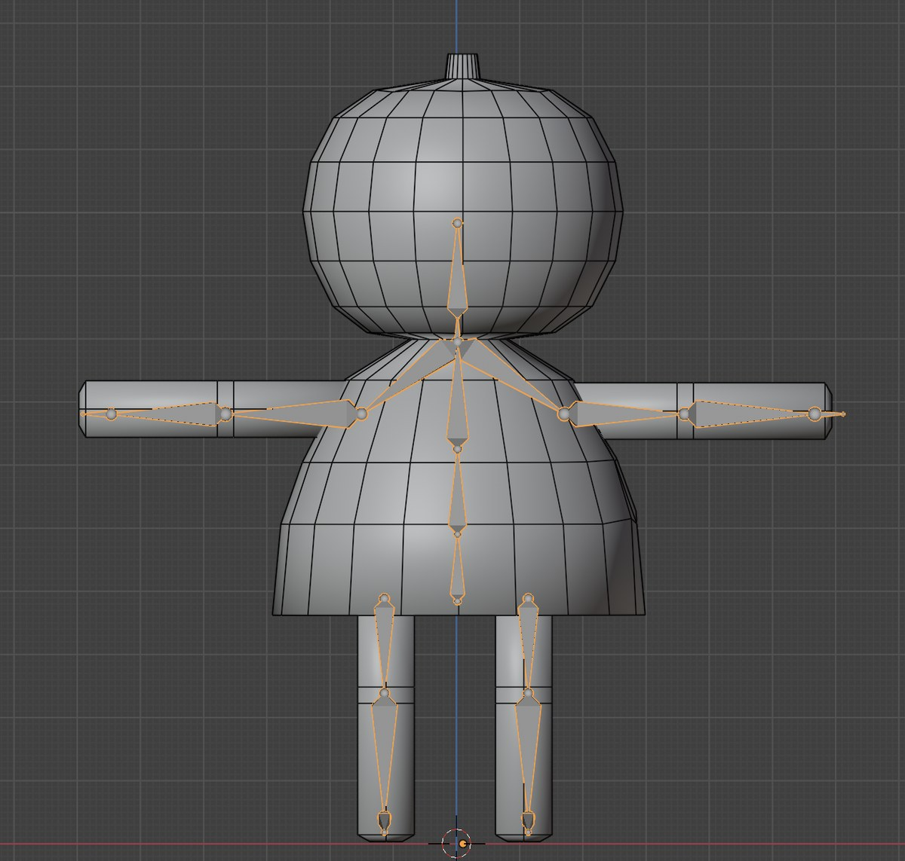
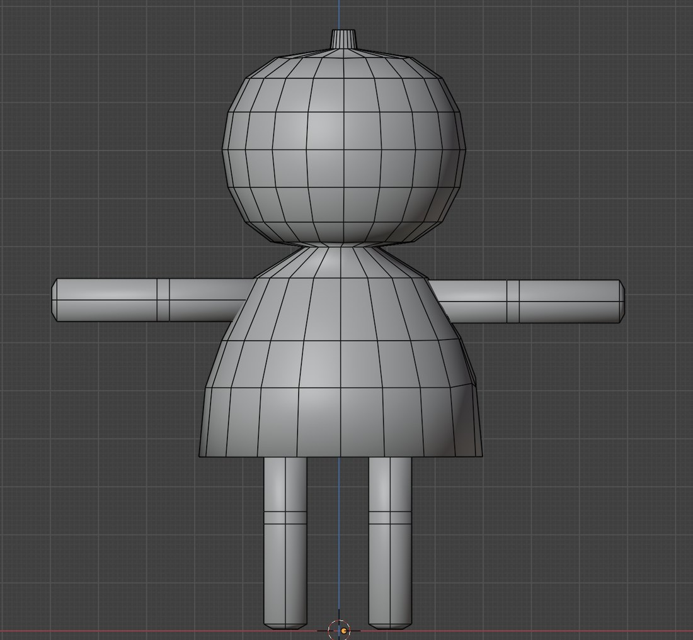
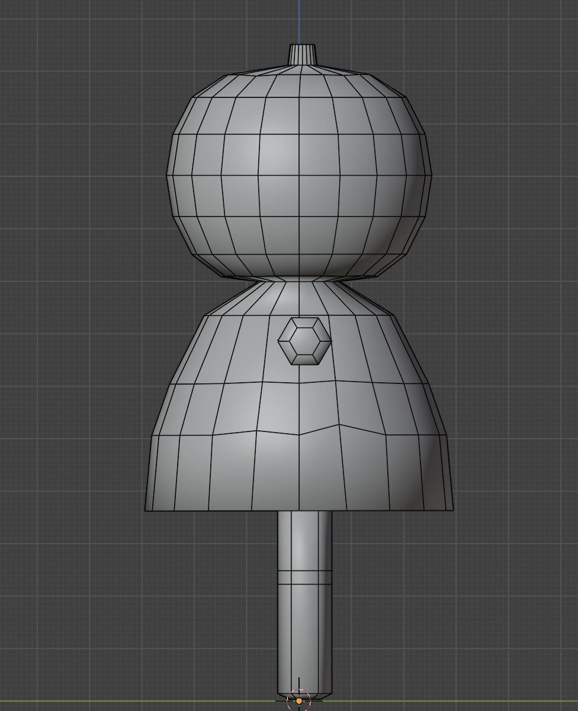
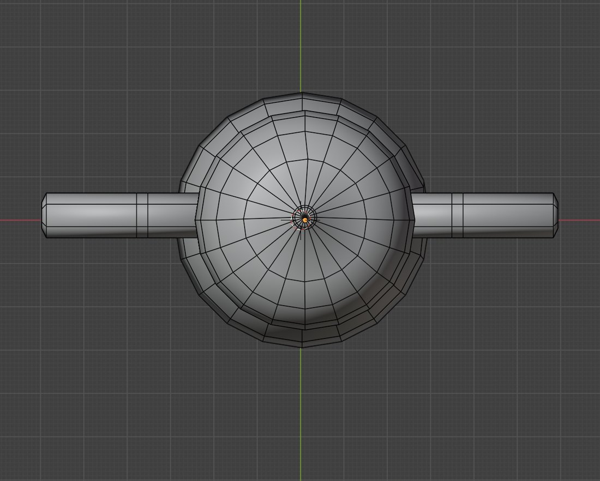

3DCG MODELING — キャラクター / 2019
初めてのモデリング
はじめて触れたBlender ／ 動かせる3Dモデル
IBSでの映像制作に慣れてきた頃、表現の幅を広げたくて3DCGに挑戦。チュートリアルに沿って、モデリングからテクスチャペイント、スキニング（リグ付け）まで一通り行い、「動かせる3Dモデル」として完成させた、はじめてのBlender作品です。
制作背景
IBSでの映像制作に慣れてきた頃、「自分の表現の幅をもっと広げたい」と思い、3DCGに挑戦しました。これがはじめてBlenderに触れた作品です。
「ワニでもできる！モデリングforVRChat」というチュートリアル動画に沿って、モデリング → テクスチャペイント → スキニング（リグ付け）まで一通り行い、ボーンで動かせる状態まで仕上げました。
必要な技術を、自分で教材を探して習得する——その最初の一歩がこの作品です。ここで得た3DCGの基礎が、のちの制作につながっています。
RIG · SKINNING
スキニング（リグ）
アーマチュア（ボーン）を入れてスキニングし、ポーズを付けて動かせる状態まで仕上げました。チュートリアルの主目的だった「動かせる3Dモデル」を、最後まで通して経験できた一本です。

WIREFRAME
ワイヤーフレーム
正面・側面・天面のワイヤーフレーム。シンプルな形状を、扱いやすい構成で組んでいます。



SPEC
- 制作
- 2019年10月22日（制作期間 約1日）
- ポリゴン
- 頂点 538 ／ 三角面 784（書き出したモデル）
- マテリアル
- 1
- リグ
- アーマチュア＋スキニング（ポーズ可能）
- 使用ソフト
- Blender（モデリング・テクスチャペイント・リグ）
- 教材
- 「ワニでもできる！モデリングforVRChat」（YouTube チュートリアル）に沿って制作